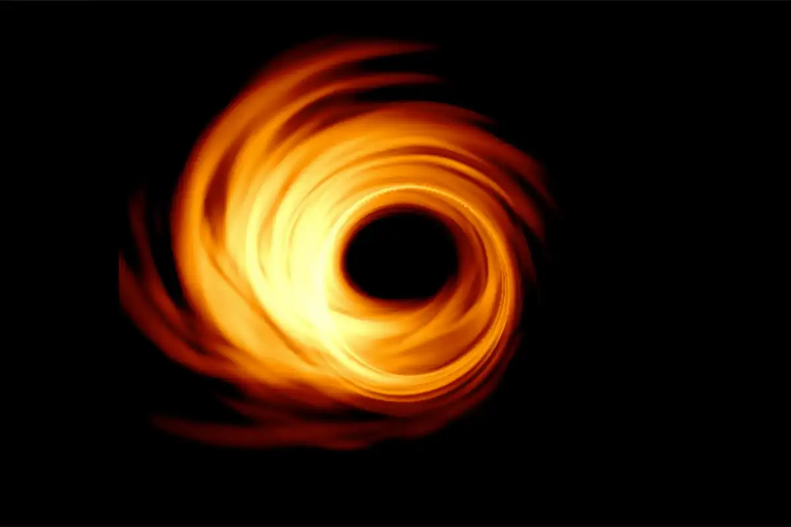

Cast:

Anne Hathaway
Brand
Ellen Burstyn
Murph
Jessica Chastain
murph
Mackenzie Foy
Murph
Matt Damon
Mann
Matthew McConaughey
Cooper
Casey Affleck
American Actress
Timothée Chalamet
Young Tom
Brand
Murph
murph
Murph
Mann
Cooper
American Actress
Young Tom

The Endurance crew decides to scout out Miller’s planet because it was the one that had most recently transmitted data to them. But since the planet is so close to the black hole, time is extremely dilated — every hour on the water planet is equivalent to seven years on Earth. Cooper, Brand (Anne Hathaway), and Doyle (Wes Bentley) land on the surface and attempt to locate Miller’s transponder. But just as Brand finds the device, a massive wave rolls in, forcing the crew to flee to the courier ship. Doyle dies but Cooper and Brand narrowly escape — and Brand realizes that Miller must’ve died seconds before they arrived because of the severe time dilation.
Matt Damon plays the role of Dr. Mann, the captain of the Lazarus mission. After the failure of the water planet mission, Cooper is left with a difficult choice – go to Dr. Edmunds’ planet or Dr. Mann’s planet.Cooper chooses Mann’s planet, taking the Endurance on a one-way trip to Matt Damon Town. When the crew arrives, they find Mann in cryosleep. It’s pretty much clear from the get-go that something is wrong with Mann – although considering the fact that he’s been in solitude/cryosleep for years, it’s not hard to see why. But Mann has more than just a case of cabin fever, he’s full-blown bent on finishing the mission, no matter the cost.
Back on Earth, Dr. Brand reveals to Murph that Plan A was always a sham and there’s no way the people of Earth could ever escape.
At the heart of every galaxy lies a supermassive black hole, where gravity
is so strong that nothing - not even light - can escape its boundary.
In the movie "Interstellar," a fictional black hole called Gargantua takes
center stage. The film came out exactly five years ago, in November 2014.
In it, Matthew McConaughey and Anne Hathaway play astronauts who travel
through a wormhole - a tunnel that allows for nearly instantaneous travel
between far-distant points - to explore three planets that orbit
Gargantua, 10 billion light-years from Earth.
In the end, McConaughey's character navigates his ship into the
supermassive black hole, inside which he discovers a fifth dimension,
inter-dimensional omniscient beings, and the ability to communicate with
his estranged daughter across time and space.
Director Christopher Nolan and his visual effects team strove for superior
scientific accuracy in "Interstellar" - they even hired theoretical
physicist and Nobel laureate Kip Thorne as a consultant.
"Neither wormholes nor black holes have been depicted in any Hollywood
movie in the way that they actually would appear," Thorne said in an
interview prior to the movie's release. "This is the first time the
depiction began with Einstein's general relativity equations." Indeed, the
movie's depiction of Gargantua was lauded as the most accurate film
portrayal of a black hole ever.
But in the last five years, a handful of major discoveries about black
holes have given physicists new insights about what these massive objects
look like and how they behave. Based on that information, Gargantua wasn't
completely accurate, though it still comes close in many respects. Here's
what "Interstellar" got right and wrong.

The outer border of that center is known as the black hole's event
horizon, or "point of no return." But in April, a group of scientists from
the international Event Horizon Telescope (EHT) Collaboration released the
first-ever photograph of a supermassive black hole to the public. Though
the image was fuzzy, it showed that, as predicted, black holes look like
dark spheres surrounded by a glowing ring of light. "As a cloud of gas
gets closer to the black hole, they speed up and heat up," Josephine
Peters, an astrophysicist at the University of Oxford, previously told
Business Insider. "It glows brighter the faster and hotter it gets.
Eventually, the gas cloud gets close enough that the pull of the black
hole stretches it into a thin arc."

These 2 images are very similar and its astonishing as how this was
predicted already in the movie.Thorne told Gizmodo that "the human eye
would likely not be able to discern the brightness differences on the two
sides of the hole when the overall brightness is so extreme." That's why
the film's black hole appears to have same brightness all the way around.
Scientists confirmed that there's a supermassive black hole at the
center of our galaxy.
This is a must watch movie so what are you waiting for :)